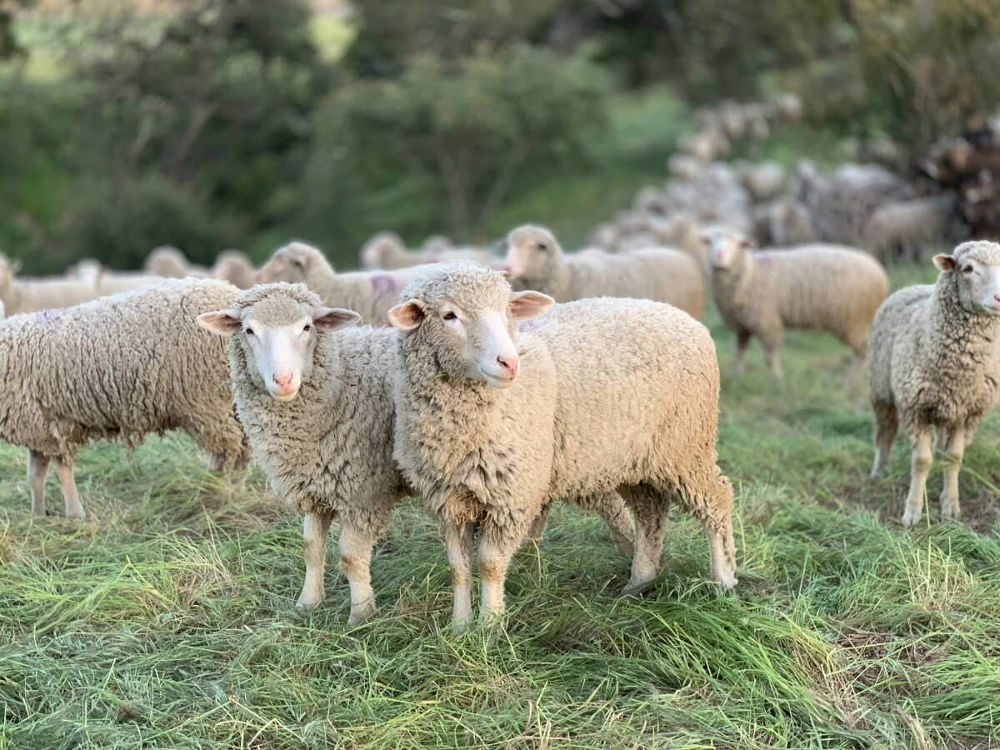
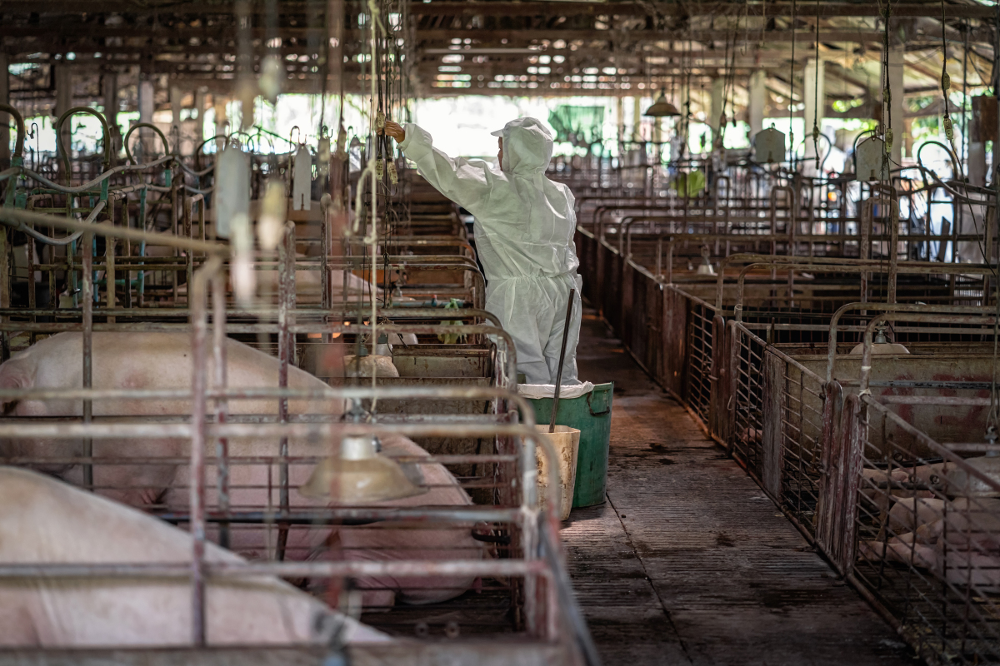

Embracing Kindness
The Moral Argument for Veganism
You don’t often see thinkers dedicating more than passing remarks against veganism. After all, being kind to animals is not a controversial attitude. On moral and practical grounds, dismissing veganism is not easy. That is why I appreciate Christopher Belshaw’s article Against Veganism, which offers a more thoughtful list of arguments. They are more serious and interesting than the usual talking points vegans are met with.
The article proposes that there are certain situations, outside of self-defence or obvious necessity, where killing and rearing animals for human use is acceptable. The author is careful to mention that ‘the bad practices rife in intensive farming generate powerful arguments against meat, dairy, eggs.’ And I agree - one does not have to be vegan in order to oppose the cruel ways animals are treated on factory farms. This, of course, already means most of the farm animals alive now are mistreated, even by his terms. Belshaw argues there are better ways of doing things.
Interestingly, he lists stronger arguments in favour of killing rather than rearing animals. Let us check them all, one by one. The main points of each argument are quoted directly from the original text.
Arguments Permitting Animal Killing
Painless death is not bad for animals
Even if animals can have overall good lives, such that the pleasure outweighs and compensates for the pain, it is nevertheless not bad for them painlessly to die. […] Because, unlike us, animals lack a consciously-formulated desire for survival. […] So it’s not bad that they die prematurely. Maybe we should concede that self-conscious animals such as whales, elephants, chimps, even dogs, are different here. But these are not the animals we eat.
If only Belshaw did not go into details. Whales, elephants, chimps and even dogs are animals that people eat on a regular basis. This is not only about isolated tribes forced to hunt chimps or the eating of dogs frowned upon by most Westerners. Species of whales have been hunted to extinction and are still eaten in wealthy countries such as Norway or Japan. Only because of overhunting and large efforts from activists are such animals now protected by law.

Photo by Tanner Yould on Unsplash.
Farm animals such as pigs, cows and even chickens (Marino, 2017) have been shown to be as intelligent as dogs or young children. There seem to be solely cultural reasons to prefer some meats over others, not moral ones. A moral standard of refraining from killing ‘self-conscious animals’ would rather lead to veganism (and not towards killing animals that also conveniently happen to be commonly eaten in a particular culture).
Now, we can safely assume happy humans who have a ‘consciously-formulated desire for survival’ want, well, to continue existing. As for animals, one may argue they do not possess such desires, save for ‘whales, elephants, chimps, even dogs.’ They are not aware of having interests. However, what about the large swathes of humans who want to continue living even though they never thought much about it? They never made a conscious wish on this matter. This is true of children, sick or older people and many others. After all, we live in pro-natalist societies where continuing to live and reproduce are simply the norm. The instinct to survive is one of our most basic. The non-conscious interest of humans in continuing to exist should be respected, as I believe Belshaw would agree. Why wouldn’t this apply to animals?

Even if we agree or are neutral on the idea that it is ‘not bad for them painlessly to die’, there are still strong reasons not to kill animals (unless it is for their own obvious benefit). Consider a ‘humane’ cannibal who sources their meat only from humans who previously agreed to be killed or who do not care what happens to their bodies after they die. We need not appeal to culture in order to reject this practice; a principle of prudence is enough. Prudently, we can oppose this idea because it would very likely lead to an industry (legal or illegal) where many human corpses would be trafficked or obtained against the will of victims. I believe such a prudent approach would be better in the case of animals too. Save for humans who do not have other options, we should refrain from eating meat so as to not encourage violent ways of obtaining it. It is not easy to trust humans to be kind owners and not mistreat animals, despite all the incentives to do so.

My question was – and still is – a short good life with a pain free death, or no life at all, which would you prefer? A reply to Petrică Nițoaia.
A short, good life with a pain-free death; or no life at all?
Consider just humane farming, and the animals alive right now. Our options are: continue with business as usual; kill them all now; care for them into their old age and death by natural causes; or finally, set them all free. […] What we should think about well-tended farm animals, then, is that even if their lives aren’t the best possible, they are nevertheless worth living, and generally the best lives available for them. A short, good life with a pain-free death; or no life at all. Which would you prefer?
That is a conveniently short list of options. A gradual transition towards veganism would solve most of the issues the other options face. A reduction in the demand for meat and other animal products would mean the phasing out of factory farms, where many animals would presumably be slaughtered and the rest relocated to shelters. There will not be a need to set farm animals free, as a reduction in consumption would be accompanied by a reduction in the forced breeding of new farm animals.
This aside, we have to agree with Belshaw that killing happy farm animals is, comparatively, less bad than making their lives miserable before the sacrifice. If we have to choose between breeding animals that will lead either miserable or happy lives, the least bad choice is the latter. There is, however, another option – to not needlessly breed more farm animals into existence. One would find it more palatable than the others.
To begin with, for this argument to work, the animals must be happy. This, again, leads us to a very small segment of animals since virtually all factory-farmed animals are treated badly, and, in my experience (as a former shepherd), a majority of animals reared in different ways are also subjected to indignities and suffering. ‘A short, good life with a pain-free death’ is very rare indeed for farm animals, and by condoning ‘humane farming’, inhumane practices follow easily. ‘That is, when we adopt a policy of eating happy animals, we will likely end up eating unhappy animals as well.’ (John, Sebo 2020) You may say this is a slippery slope, but we live in a world of factory farms, puppy mills and animal circuses. Forget about the slope; we are in the abyss.
In order to support this third point, Belshaw uses Kazuo Ishiguro’s 2005 novel Never Let Me Go as an example. Now this is a very weird analogy to make. In the acclaimed novel, some humans are ‘created and raised as a source of replacement organs.' Their deaths are slow and often painful; as many organs as possible are sourced and those left behind see their loved ones dying before their time. Until here, the analogy holds. Where these two situations differ is that a (weak) case could be made about the usefulness of the people in the novel. Not in the case of farmed animals. They are bred into existence mainly for the pleasure of humans, usually not for any great need. We can live jolly and healthy on vegan diets, so the analogy finally fails.
◊ ◊ ◊
These two arguments currently apply only to a very small number of cases. That is, to animals that had happy lives. We can all agree this is better than crueller practices, especially factory farming. Still, a vegan would caution against needlessly killing even animals that had a good life. Killing them for human pleasure is morally wrong. This would be permissible if humans had no other choice or if euthanasia was for the benefit of the animal. A better analogy to the situation of happy farm animals is the excellent manga The Promised Neverland.
Arguments Requiring Animal Rearing
Logic of the Larder
The first of these is in certain respects a bad argument. The two that follow are better.
According to the so-called ‘Logic of the Larder’, we actually benefit animals – do them a favour – by bringing them into existence, even if for a short life. As Leslie Stephen put it, no one has more interest in bacon than the pigs who provide it (Social Rights and Duties, 1896).
Not much needs to be added here; Belshaw himself recognises this as a weak argument. The lives of most pigs are nothing short of nightmares; horror film directors would do well to visit factory farms for inspiration. The Logic of the Larder fails on its own terms, for ‘the purchase of animal products uses resources that could otherwise be used to bring a much greater number of animals into existence. If we want to maximize the number of animals with lives worth living, we should adopt a vegetarian diet.’ (Matheny, Chan, 2005)
It is good for humans
Yet it still might be good – but this time good for us – if certain animals are deliberately brought into existence, quite apart from whether we plan to eat them or not.
Belshaw also says that we ‘regret the threat of extinction that hangs over many rare breeds’ and rearing them would allow us to maintain a connection to our past. This may certainly be true, and, I suppose, give his arguments about killing, since we decided to breed them, ‘it seems there’s no reason then not to eat them’.
Now, to be clear, there are examples of humans who enjoy breeding and killing animals; this is good for them (though I doubt many of us find this a morally acceptable argument). There are other humans forced by necessity to fish, hunt or rear animals; this is good for them too, since otherwise they would suffer hunger or die. But how about humanity as a whole? Does animal agriculture only bring benefits?
In order to have animal products for us to use, we need as a society to force a group of people into working with those animals, raising them, coercing and later killing them. Work with animals is often exploitative, especially in slaughterhouses. (Some defend this by saying that other industries are also exploitative. I find this line of thought unappealing – we’d better minimise human exploitation everywhere than excuse it on the basis that it is prevalent.) Violence towards animals is also linked to violence towards humans.
Animal agriculture brings public health threats through the overcrowding of animals and the routine use of antibiotics. A great many zoonotic diseases, such as Hepatitis E, HIV, tuberculosis, COVID, rabies, salmonella and E. coli could have been prevented or their impact reduced if humans relied more on plant-based diets. Antibiotic resistance, especially, is a growing global problem and animal agriculture is a major contributor to this. When we choose to consume animal products, we are either not informed about these risks or unaware of their magnitude.
Granted, nowadays, factory farming is the main responsible industry for many of these problems and Belshaw’s arguments are not in support of it. Humane farming would avoid some of the suffering animals are subjected to in factory farms but would require vast amounts of land, resources and humans to care for the animals. The pollution and impact on the climate would be even greater. A move towards more plant-based lifestyles avoids all these problems. Alternatively, meat and other animal products could perhaps become something of a delicacy, sourced only from animals that lived happy lives, while the bulk of our diets would be plant-based. ‘Perhaps then synthetic food is the future?’
Your ad-blocker ate the form? Just click here to subscribe!
Rearing animals is aesthetically pleasing
A third argument, somewhat similar, focuses on landscape and environment. It reflects a simple but important aesthetic concern. The countryside we like, feel at home in, and want to explore, is very much shaped by farmers and their animals, and has been so for centuries.
Belshaw avoids at all costs proposing a symbiotic relationship with farm animals. A meaningful relationship with other animals and beautiful landscapes can most certainly exist in circumstances where humans are caretakers of animals and not owners. Must we eat and breed animals for ‘aesthetic’ concerns in order to build meaningful relationships with them? Is forcing animals into submission and forcing humans to work with animals really worth it, just for us to enjoy some beautiful landscapes? Wouldn’t rural landscapes be better without slaughterhouses and if we knew no sentient being was trapped in a filthy pigsty?
Aesthetic values are subjective. The huge Palace of the Parliament in Romania was built using forced labour and paying for it contributed to the crippling austerity that led to food shortages throughout the country. Many workers died during the construction. The building is monumental, a symbol of the country, and, for many, aesthetically pleasing. I believe no decent person would accept the idea that ‘it was worth the costs and the deaths.’ We can build greater buildings without having to use forced labour or cause misery to a whole country.

Some moral views value aesthetics more than others. Even so, if that beauty comes at the cost of imposing suffering on others, that is not right. Belshaw’s ideal scenario is one where animals also benefit (by being provided with good lives), but this cannot be easily accomplished in reality. And when it is, if we are to also eat those animals, there is a clear conflict of interests.
Some people enjoy natural landscapes, while others enjoy village ones. Those who enjoy the latter can maintain them with less harm. The fact that the countryside we are used to was created through animal exploitation (and often human coerced or slave labour too) is not a reason for us to continue doing that. We can do better. Both for us and for the animals.
Discussion
Towards the end of Belshaw’s article, vegans are accused of using slippery slope arguments too often and being pessimistic about human nature. This, perhaps, could have been a reasonable position 200 years ago. However, today we live in a world of factory farms, where a majority of animal products come from animals forced into lives of indescribable misery. This is beyond anything moralists and vegans of the past imagined. We cannot solely blame deceiving marketing and propaganda on the part of producers or a lack of education on the part of customers for this. The attitude of viewing animals as commodities to be used as we please and traditional prejudice (speciesism) are also to blame.
Belshaw then reminds us that ‘there are also suspects [sic] practices in tea and coffee production; similarly with avocado and soy; and notoriously so in clothing manufacture’ and that governments should do more to prevent both these and animal abuse. Yes, very often, governments are led by people who directly profit from human and animal exploitation. We cannot only trust the owners to act better. Personally, to the best of our abilities, we should oppose exploitative industries. When it comes to animal exploitation, being vegan is the clearest way to do that.
I sympathise with Belshaw’s ideal of humane treatment of animals. Morally, this is much to be preferred to the current situation. Practically, however, there are not enough resources or land to support both a booming human population and the increasing demand for animal products. There are not many ways this can go down. One is for the current levels of meat consumption to continue, accelerating climate change, wasting resources and disproportionately affecting vulnerable communities. Another is to reduce our meat consumption, work towards a better distribution of food and opt for sustainable plant-based crops and diets.
Finally, think about pacifism. We can agree that, ideally, there should be no violence and wars while recognising the necessity of fighting defence wars. Similarly, veganism should be our goal, but we have to accept situations where humans are forced by necessity to harm animals. Where does Belshaw’s proposal fit here? It is much to be preferred to the current situation, but without a clear commitment to veganism and animal liberation, it can easily be abused and not improve the situation of animals much.
It is better for us and the animals if we behave kinder towards them. Once we recognise the moral importance of animals, we have to improve our relationship with them. Humane farming is a step in that direction, but why stop halfway? Veganism is simpler and better, both for us and the animals.
Please also read Christopher Belshaw’s reply to this article:
My question was – and still is – a short good life with a pain free death, or no life at all, which would you prefer? A reply to Petrică Nițoaia.
◊ ◊ ◊

Petrică Nițoaia is a former shepherd, passionate about philosophy and animal ethics. He writes mainly on the ethics of food production, wild animal suffering, human rights and philosophical pessimism. He finds philosophy and history not only fascinating but also fun and useful for making the world a more joyful and fair place for all.
Petrică Nițoaia on Daily Philosophy:
References
Belshaw, C., Against Veganism, Philosophy Now, issue 146, https://philosophynow.org/issues/146/Against_Veganism
Benatar, D., Better Never to Have Been: The Harm of Coming into Existence (Oxford, UK: Oxford University Press, 2006)
John, T.M., & Sebo, J., 2020, Consequentialism and Nonhuman Animals. The Oxford Handbook of Consequentialism, https://doi.org/10.1093/oxfordhb%2F9780190905323.013.32
Marino, L. Thinking chickens: a review of cognition, emotion, and behavior in the domestic chicken*. Anim Cogn* 20, 127–147 (2017). https://doi.org/10.1007/s10071-016-1064-4
Matheny, G., Chan, K.M.A. 2005, Human Diets and Animal Welfare: the Illogic of the Larder. J Agric Environ Ethics 18, 579–594. https://doi.org/10.1007/s10806-005-1805-x
Cover image by Anna Pelzer on Unsplash. Other images from Envato Elements, used with permission.